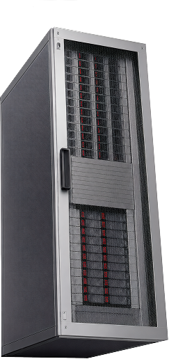
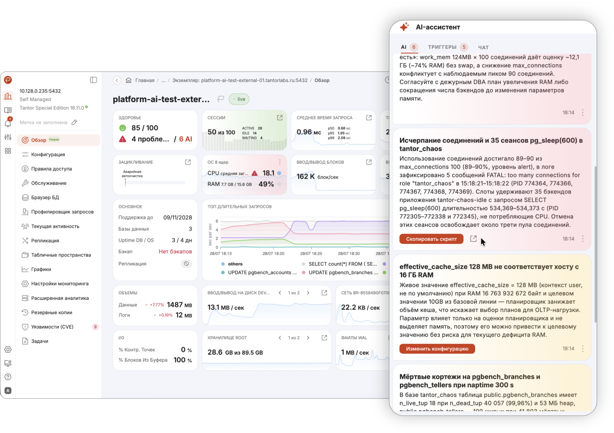
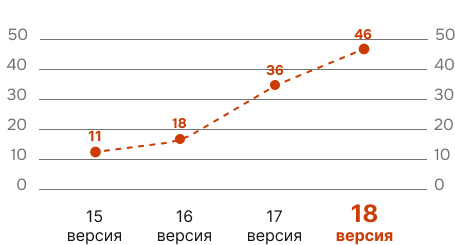

от корпоративной СУБД нового поколения?

Не спешите их переписывать.
На PostgreSQL уже работают сотни российских бизнес-приложений, есть зрелая экосистема инструментов и расширений.
С ростом нагрузки архитектура усложняется: появляются отдельные СУБД для аналитики, инструменты синхронизации данных между контурами, дополнительные слои интеграции. Инфраструктура становится разрозненной и сложной в сопровождении.
с Postgres, 1С и другим ПО
и аналитики (HTAP)
масштабирование
к ИИ-нагрузкам
Подход Tantor: 100% совместимость с PostgreSQL и упрощение архитектуры без переписывания кода бизнес-приложений.
МБД Tantor XData – горизонтально масштабируемая платформа, которая объединяет OLTP и OLAP в одном контуре и сохраняет полную совместимость с PostgreSQL, существующим ПО и расширениями.
Инфраструктура остаётся привычной для разработки и эксплуатации, при этом исчезает необходимость в разнородных СУБД, синхронизациях и переписывании приложений.
запас на годы вперёд
ИИ, harness и централизованное управление БД PostgreSQL

Читать, как ИИ меняет экономику эксплуатации СУБДна тестовой базе ERP 2.5 размером 646 МБ
версия16
версия17
версия18
версия
объема функциональности для 1С

версия16
версия17
версия18
версия
Tantor Postgres 18 — это СУБД для высоконагруженных систем с огромным количеством доработок на уровне ядра для повышения производительности, в том числе для работы с «1С».
Отдельные технологии для задач, которые выходят за рамки классической архитектуры PostgreSQL, после проверки мы включаем и в Tantor Postgres.
Каждый релиз проходит тщательное тестирование на прикладных сценариях.
В 2026 году «Тантор Лабс» исполнилось 5 лет.
За это время мы выросли из компании, оказывающей коммерческие услуги вокруг PostgreSQL, в полноценного вендора и технологического лидера российского рынка СУБД.
В сентябре на нашей ежегодной конференции Tantor JAM рассказали о новых разработках. Смотрите видео! Дальше — больше!
5 лет «Тантор Лабс». Российским СУБД пора играть по-крупномуAI-first подход в управлении и администрировании СУБД. Как меняется профессия DBA?МБД Tantor XData Gen3: результаты тестов OLTP, OLAP и HTAPВсе выступления